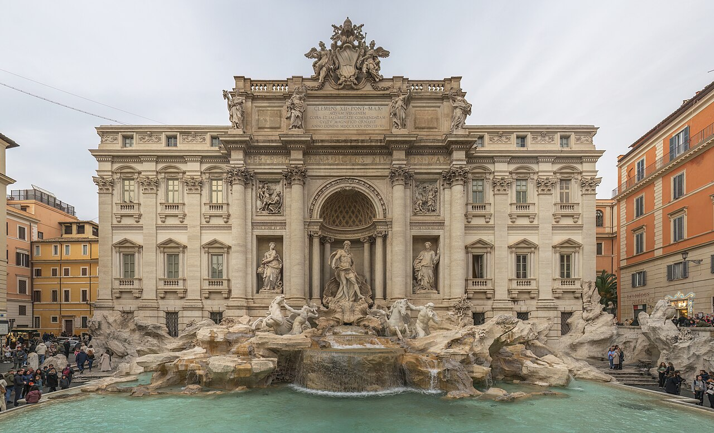
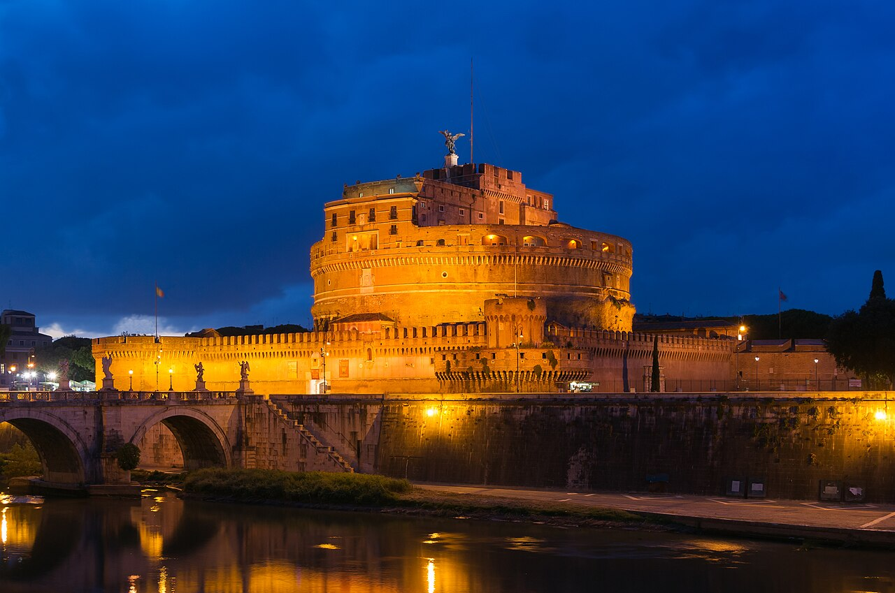
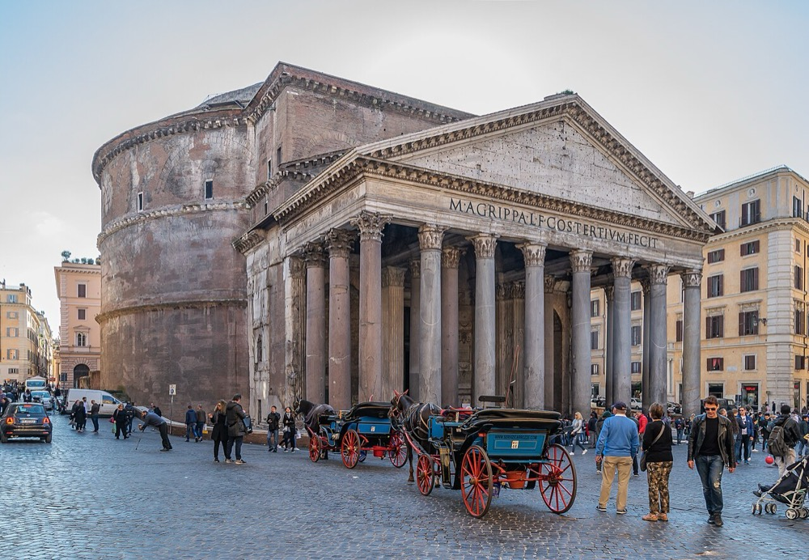
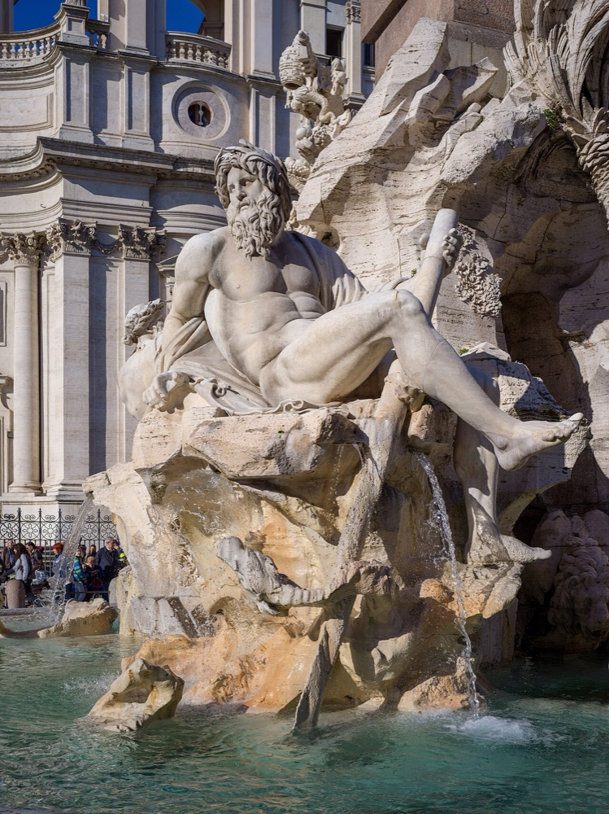

Рим в 15:15 в мини-группе
Два авторских маршрута — Красный и Синий — чередуются через день. Начало ровно в 15:15.
€35 / чел.
Вечный город стоит увидеть с тем, кто в нём живёт. За 2 часа 15 минут — Капитолий, Треви, Пантеон или скрытые дворики Трастевере. От €35 — и вы уже не турист, а местный.
Выбрать экскурсию
Два авторских маршрута — Красный и Синий — чередуются через день. Начало ровно в 15:15.
€35 / чел.
Нетуристический формат: 15 заданий-ритуалов и локации вне путеводителей.
€50 / чел.
Любой авторский маршрут — только для вашей компании.
€175 / группаИммерсивная прогулка: место встречи и пароль приходят на почту после брони.
€190 / группаРим на свежую голову — до толп и жары.
€55 / чел.Закатный Рим: золотой свет, фонтаны и первый бокал.
€65 / чел.Без очереди, билеты включены.
€65 / чел.Без очереди, билеты включены.
€100 / чел.Гастрономическая прогулка.
€87 / чел.Парадный Рим: знакомство с главными символами.
Старт: пл. Венеции (у Витториано) · финиш: пл. Испании
Живой, немного загадочный Рим.
Старт: пл. Венеции · финиш: Трастевере
Лицензированный гид, 30+ лет живёт Римом.
10 лет влюбляет гостей в живой, не музейный Рим.
Историк, 20 лет в Риме.
Рим через запахи, свет и узкие улочки.
Историк искусств: тайны каждого фасада.
8 лет создаёт авторские маршруты.
Все отзывы путешественников — на отдельной странице 👇
Читать и оставлять отзывы